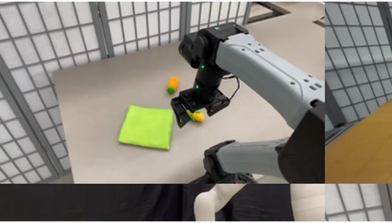
영상 1. teaser
로보틱스의 오랜 목표는 embodiment별 적응 없이 새로운 로봇 embodiment에 zero-shot으로 배치할 수 있는 generalist policy를 개발하는 것이다. 대규모 multi-embodiment 사전학습에도 불구하고, 기존 Vision–Language–Action 모델(VLA)은 여전히 학습에 사용된 embodiment에 강하게 결부되어 있으며 일반적으로 비용이 많이 드는 미세조정을 필요로 한다. 본 연구는 저수준 로봇 action을 자연어로 직접 표현하여 action supervision을 사전학습된 vision–language 모델의 입출력 분포와 정렬하는 간단한 방법인 Language-Action Pre-training(LAP)을 제안한다. LAP은 학습된 tokenizer도, 비용이 많이 드는 annotation도, embodiment별 아키텍처 설계도 필요로 하지 않는다. LAP을 기반으로 본 연구는 LAP-3B를 제시하며, 이는 저자들이 아는 한 embodiment별 미세조정 없이 이전에 본 적 없는 로봇 embodiment로 상당한 zero-shot transfer를 달성한 최초의 VLA이다. 여러 새로운 로봇과 조작 과제에서 LAP-3B는 평균 zero-shot 성공률 50%를 넘으며, 가장 강력한 기존 VLA보다 약 2× 향상된 성능을 보인다. 또한 LAP이 효율적인 적응과 유리한 scaling을 가능하게 함을 보이는 한편, action prediction과 VQA를 공유된 language-action 형식으로 통합하여 공동 학습을 통해 추가적인 성능 향상을 얻는다.
Vision-Language-Action 모델, Cross-Embodiment 학습
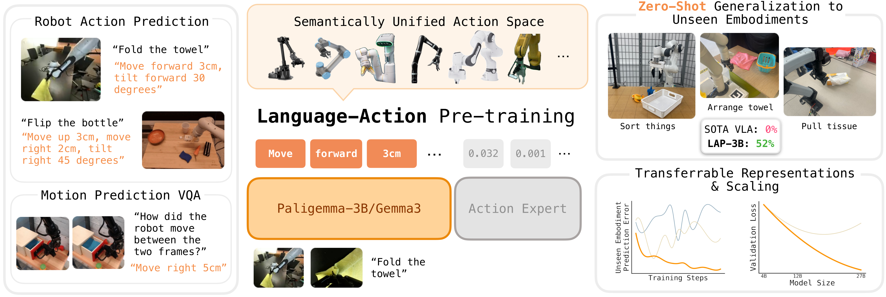
로봇 foundation policy가 궁극적으로 약속하는 바는 어떤 로봇 embodiment라도 제어하여 인간 수준의 지능적 과제를 수행하게 하는 능력이다. Vision–Language–Action 모델(VLA)은 이 목표를 향해 괄목할 만한 진전을 이루어 왔다. 이들은 사전학습된 Vision–Language 모델(VLM)을 활용하여 광범위한 장면, 나아가 과제 일반화를 위한 강력한 시각·의미론적 prior를 확보한다. 그러나 그림 1에서 보듯이, 대규모 multi-embodiment 학습에도 불구하고 최신 VLA는 학습에 사용된 embodiment와 사소한 차이만 있는 경우에도(예: 변경된 gripper 또는 wrist camera 위치) 새로운 로봇에서 zero-shot으로 작동하는 일이 여전히 드물다. 실제로 새로운 로봇에 VLA를 배치하려면 흔히 embodiment별로 광범위한 적응이 필요하며, 이는 비용이 많이 들고 하나의 광범위하게 배치 가능한 foundation model이라는 목표를 훼손한다.
근본적으로 zero-shot cross-embodiment transfer가 어려운 이유는 embodiment 공간이 방대하고, 이를 데이터로 포괄하는 데 본질적으로 큰 비용이 들기 때문이다. 과제 및 환경의 다양성은 실제 환경에서 수집한 로봇 데이터와 인터넷 규모의 egocentric video를 통해 확장할 수 있지만, embodiment 다양성은 하드웨어 가용성과 데이터 수집 물류의 제약을 받는다. 예를 들어 Open X-Embodiment 데이터셋이 취합하는 데이터도 불과 수십 종의 로봇에서 나온 것이다. 따라서 zero-shot transfer를 달성하려면 빠짐없는 포괄 범위에 의존하기보다 제한된 embodiment 다양성에서 최대한의 일반화를 끌어내야 한다.
본 연구의 핵심 관찰은 zero-shot cross-embodiment transfer가 motor control을 위해 사전학습된 VLM을 어떻게 적응시키는지에 결정적으로 좌우된다는 것이다. 구체적으로 모델은 embodiment 간 transfer를 가능하게 하는 의미론적·시각적 representation을 유지하면서 정밀한 제어 능력을 습득해야 한다. 이러한 균형이 제대로 관리되지 않으면 embodiment별 action learning이 일반화에 필요한 바로 그 feature를 덮어쓸 수 있다. 그러나 VLM은 모터 수준의 고주파 제어 신호를 해석하거나 생성하도록 사전학습되지 않으므로, 표준 VLA 학습은 분포 불일치를 유발하고 사전학습된 지식을 저하시킬 수 있다.
이러한 관찰에 착안하여 본 연구는 motor control을 위해 사전학습된 VLM backbone을 적응시키는 간단한 VLA 사전학습 방법인 Language-Action Pre-training(LAP)을 제안한다. LAP은 모델이 자연어로 기술된 action을 예측하도록 학습하며, 본 논문에서는 이를 language-action이라 부른다. 그림 1에 나타낸 것처럼 language-action은 raw end-effector action의 순효과를(예: “왼쪽으로 5 cm 이동”, “앞으로 45도 기울임”) VLM이 모델링하도록 학습된 것과 같은 modality로 표현한다. 이는 추가적인 데이터 annotation 없이 고정된 좌표 규약과 template에 따라 raw action에서 parsing할 수 있다.
이러한 representation 선택은 VLM을 raw action을 예측하도록 미세조정하는 표준 VLA 학습 방법에서 발생하는 분포 불일치를 직접 겨냥한다. 여기서 raw action은 연속적인 관절 또는 end-effector 명령이나 그 discretization이며, 임의적이거나 추상적인 token으로 표현된다. 이러한 representation에는 embodiment 전반의 behavior를 통합할 수 있는 의미론적 구조가 거의 없다. 특히 통합된 end-effector action space를 채택한 경우에도 이러한 한계는 지속된다. 기존 VLA는 여전히 새로운 embodiment에 거의 또는 전혀 zero-shot generalization하지 못한다(‘Zero-Shot Cross-Embodiment Generalization’ 절 참조). 이 결과들을 종합하면 cross-embodiment transfer는 action space를 통합하는 것만으로 달성할 수 없으며, 근본적으로 다른 action representation이 필요함을 알 수 있다. Language-action은 supervision signal을 VLM의 사전학습 분포에 가깝게 유지함으로써 그러한 representation을 제공하고, embodiment 간에 transfer되는 의미론적으로 grounding된 feature를 촉진한다.
이 representation을 마련한 다음에는 LAP을 실용적인 VLA 아키텍처로 어떻게 구현할지 살펴본다. 원칙적으로 action generation을 language modeling 문제로 취급하면 LAP을 어떤 VLM 기반 VLA에도 적용할 수 있다. 그러나 이러한 formulation은 일반적으로 inference 시 auto-regressive language-action token sampling에 의존하는데, 이는 비효율적이며 로봇 제어에 적합하지 않다. 따라서 본 연구는 π₀.₅를 따라 LAP으로 학습한 VLM backbone과 연속 제어를 위한 경량 diffusion 기반 action expert를 결합한 hybrid 설계를 채택한다. 이 Mixture-of-Transformers 아키텍처는 language-action supervision의 representation상 이점을 보존하면서 효율적인 실행을 가능하게 한다.
기여 요약. 본 연구는 cross-embodiment generalization을 가능하게 하기 위해 action을 자연어로 표현하는 Vision–Language–Action 모델용 범용 사전학습 방법인 Language-Action Pre-training(LAP)을 제안한다. LAP은 효율적인 실시간 제어를 위해 VLM backbone과 경량 action expert를 결합한 LAP-3B로 구현한다. 기존 오픈소스 로봇 데이터셋으로 학습한 LAP-3B는 이전에 본 적 없는 로봇 embodiment에 상당한 zero-shot generalization을 달성하며, 대안적인 action representation에 기반한 기존 사전학습 방법보다 상대적으로 약 2×(절대값으로 약 30%) 향상된 성능을 보인다. 저자들이 아는 한, 이는 새로운 실제 로봇 embodiment에서 zero-shot으로 작동하는 최초의 VLA 시스템이다. 모든 code, checkpoint 및 data configuration은 https://lap-vla.github.io에서 오픈소스로 제공한다.
또한 LAP-3B는 훨씬 적은 demonstration과 gradient step을 사용해 새로운 embodiment와 더 복잡한 dexterous task에 맞게 미세조정할 수 있으며, 최대 2.5× 적은 데이터로 기존 성능과 대등한 수준에 도달한다. 마지막으로 본 연구는 LAP이 더 transfer 가능한 embodiment representation을 학습하고 더 안정적인 학습 dynamics를 보이는 이유를 분석하고, model size 증가에 따른 유리한 scaling 특성을 입증하며, language-action interface가 보조 VQA objective(예: motion prediction)와의 공동 학습을 자연스럽게 지원하여 추가적인 성능 향상을 가져옴을 보인다.
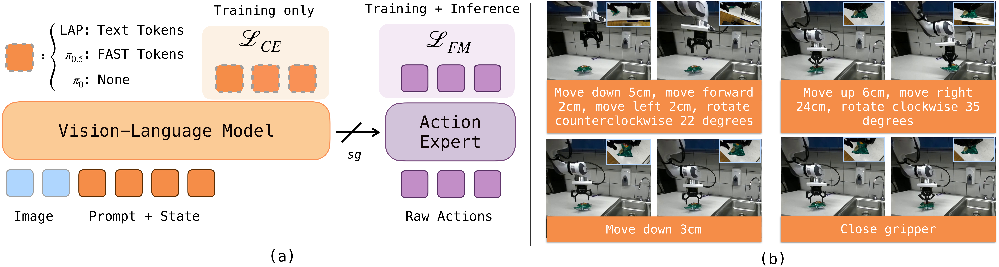
이제 VLA를 위한 범용 pre-training 방식인 Language-Action Pre-training(LAP)을 소개한다. 먼저 LAP의 language-action 학습 objective를 정식화한 다음(‘정식화’ 절), 수작업 annotation 없이 대규모 language-action을 확보하는 방법을 설명한다(‘Language-Action Dataset 구축’ 절). 이어서 상당한 cross-embodiment transfer를 보이는 LAP 학습 기반 vision-language-action 모델인 LAP-3B를 제시하고(‘모델 Architecture 및 학습’ 절), 구체적인 구현 세부 사항을 설명한다(‘구현 세부 사항’ 절).
LAP는 VLA의 action 학습을 표준 조건부 언어 모델링 문제로 재구성한다. 다중 시점 RGB 이미지와 proprioceptive state로 구성된 observation oₜ = {Iₜ¹, …, Iₜⁿ, sₜ}, 그리고 task instruction l이 주어지면, 그림 2(b)와 같이 이에 대응하는 연속 action chunk aₜ:ₜ₊H를 요약하는 구조화된 language-action sequence âₜ:ₜ₊Hˡᵃⁿᵍ을 결정론적으로 도출한다.
VLM backbone은 표준 cross-entropy objective를 사용하여 (oₜ, l)을 조건으로 language-action token을 autoregressive하게 예측하도록 학습한다.
L_CE = −E_{(âₜ:ₜ₊Hˡᵃⁿᵍ, oₜ, l) ∼ D} Σᵢ log p_θ(âₜ,ᵢˡᵃⁿᵍ | oₜ, l, âₜ,<ᵢˡᵃⁿᵍ)
이는 표준 sequence-to-sequence 언어 모델링과 동일하며, 연속 action에 대한 behavioral cloning과 유사하게 language-action의 maximum likelihood estimation에 해당한다.
LAP의 핵심 요건은 대규모 language-action supervision에 접근할 수 있어야 한다는 점이다. 수작업 annotation에 의존하는 대신, 로봇 dataset의 구조적 특성을 활용하여 end-effector trajectory에서 직접 language-action을 도출한다.
구체적으로 language-action은 end-effector delta motion에 대한 자연어 설명으로 표현한다. 고정된 coordinate convention과 소수의 구조화된 template을 사용하면 연속 action을 임의의 수치 해상도를 갖는 언어 설명으로 결정론적으로 변환할 수 있다.
로봇공학 dataset에서 일반적으로 사용하는 convention을 채택한다. 여기서 +x는 전방, +y는 좌측, +z는 위쪽이며, 회전 성분은 오른손 법칙을 따르는 Euler angle로 표현한다. 대부분의 조작 dataset이 이미 이 convention을 따르므로 별도의 frame transformation 없이 language-action을 직접 parsing할 수 있다.
embodiment에 구애받지 않는 추론과 다중 시점 visual observation의 일관된 활용을 촉진하기 위해 language-action을 여러 reference frame으로도 표현한다. 구체적으로 학습 중에는 각 language-action을 생성하는 데 사용하는 reference frame을 무작위화하여 50%는 robot base frame으로, 50%는 end-effector frame으로 표현하고, 모델 prompt에 reference frame의 이름을 포함한다.
language-action은 end-effector의 병진 및 회전 motion을 설명하는 소수의 구조화된 자연어 template을 사용해 생성한다.
âₜˡᵃⁿᵍ = “⟨verb⟩ ⟨direction⟩ ⟨magnitude⟩ ⟨unit⟩”
여기서 verb는 action 범주를 결정한다. move는 end-effector의 병진 displacement를, tilt는 roll 및 pitch 회전을, rotate는 yaw 회전을 나타낸다. 병진의 경우 direction은 {±x, ±y, ±z}에 대응한다(예: 전방/후방, 좌측/우측, 위/아래). roll과 pitch에는 오른손 법칙 convention에 따라 각각 “left/right”와 “back/forward”를 사용한다. yaw의 경우 “clockwise”와 “counterclockwise”는 각각 음의 회전과 양의 회전을 나타낸다.
매 timestep마다 language-action을 생성하는 대신, âₜ:ₜ₊Hˡᵃⁿᵍ을 action chunk aₜ:ₜ₊H의 순 displacement를 요약하는 하나의 설명으로 표현한다. action은 delta end-effector pose로 표현되므로 이는 timestep t와 t+H 사이의 누적 병진 및 회전에 해당한다. 이러한 temporal abstraction은 고주파 제어를 추상화하는 동시에 VLM이 모델링하기 더 쉬운 저주파 supervision signal을 생성한다. 또한 magnitude를 정숫값으로 이산화하고 병진을 centimeter 단위로 표현하여(예: “move forward 5 cm”) 구조적이면서도 정밀한 language-action을 얻는다. 시각적 예시는 그림 2(b)에 제시한다.
연속 action을 임의의 기호 또는 vocabulary에 없는 기호로 이산화하는 기존 action tokenization 접근법과 비교하면, language-action은 VLM의 자연어 pre-training distribution에서 여전히 충분히 지원되므로 representation 품질을 저하하는 것으로 알려진 distribution mismatch를 완화한다. action을 이산적인 비언어 token으로 압축하기 위해 별도의 representation learning 단계를 도입하는 FAST 같은 학습형 tokenizer와 달리, language-action은 순전히 결정론적 parsing으로 생성되므로 학습형 action tokenizer가 전혀 필요하지 않다. 또한 기존 action representation과 달리 language-action은 Visual-Question-Answering(VQA) task의 입출력 형식과 자연스럽게 정렬되어 상호 상승효과가 있는 co-training을 가능하게 한다. 예를 들어 “motion prediction” VQA task에서는 이미지 쌍 (Iₜⁱ, Iₜ₊Hⁱ)을 prompt로 모델에 제공하고, 관찰된 displacement를 설명하는 해당 language-action âₜ:ₜ₊Hˡᵃⁿᵍ을 예측하도록 학습한다.
LAP는 기반 VLA architecture에 구애받지 않으며, 원칙적으로 action prediction을 언어 모델링 문제로 취급함으로써 어떤 VLM 기반 policy에도 통합할 수 있다. 그러나 추론 시 language-action을 autoregressive하게 생성하는 것은 느리고 실시간 로봇 제어에는 비실용적이다. 효율적인 시스템을 얻기 위해 LAP를 LAP-3B로 구현한다. LAP-3B는 π₀.₅를 따라 LAP로 학습한 VLM backbone과 고주파 motor execution을 위한 경량 flow-matching action expert를 결합하는 Mixture-of-Transformers architecture를 채택한다. 이 설계는 통제된 비교를 가능하게 한다. LAP-3B는 VLM을 supervise하는 데 사용하는 action representation(language-action 대 FAST token)에서만 π₀.₅와 다르므로 representation 자체가 downstream에 미치는 효과를 분리할 수 있으며, 이는 실험 절에서 평가한다.
학습 중 VLM backbone은 식 1의 cross-entropy loss를 사용해 구조화된 language-action을 예측하도록 최적화하고, action expert는 다음 flow-matching objective를 통해 연속 action chunk aₜ:ₜ₊H를 예측한다.
L_FM = E_{(aₜ:ₜ₊H, oₜ, l) ∼ D}[‖v_φ(oₜ, l, aₜ:ₜ₊H, τ) − ẋ_τ‖²]
여기서 v_φ는 action expert가 parameterize한 velocity field를 나타내고, ẋ_τ는 ground-truth action chunk에 대응하는 target flow이다(전체 정식화는 부록의 구현 세부 사항을 참조한다). 전체 학습 objective는 다음과 같다.
L = L_FM + λ L_CE
이 architecture에서 VLM과 action expert는 오직 cross-attention을 통해서만 통신한다. raw action과 language-action이 서로를 attend하지 않도록 causal masking을 적용한다.
또한 action expert의 gradient가 VLM backbone으로 역전파되지 않도록 차단한다. LAP에 필수적인 요소는 아니지만, 이러한 knowledge insulation은 pre-trained VLM representation을 보존하고 joint training을 안정화하는 데 도움이 된다. 추론 시에는 제어를 위해 action expert만 rollout하므로 NVIDIA RTX 4090 GPU에서 25 Hz의 실시간 실행이 가능하다.
LAP-3B의 VLM backbone은 PaliGemma-3B 모델로 초기화한다. Open X-Embodiment(OXE) dataset과 MolmoAct dataset으로 학습한다(전체 data mixture의 세부 사항은 부록의 구현 세부 사항을 참조한다). 거의 균일한 mixing을 보장하기 위해 16 million sample 크기의 shuffle buffer를 사용하며, 이는 학습 안정성을 개선한다.
proprioception의 경우 Cartesian end-effector pose, 즉 position, 연속 6D rotation representation, binary gripper state를 사용해 state sₜ를 표현한다. open-source dataset마다 rotation convention이 일관되지 않으므로 6D representation으로 변환하기 전에 회전을 extrinsic XYZ로 canonicalization한다. proprioceptive state는 255개 bin으로 이산화하고 text token 형태로 prompt 뒤에 추가한다. action은 delta end-effector pose로 표현한다. 전체 학습 dataset에서 계산한 전역 1st 및 99th quantile을 사용하여 state와 action을 normalize하고, 보지 못한 embodiment에 대한 추론에서도 동일한 통계를 재사용한다.
학습에는 64개 TPU v6e chip에 걸쳐 global batch size 2048을 사용하며, 15k gradient step 동안 학습한다(wall-clock 기준 약 10시간에 불과하다). 이는 전체 dataset의 약 0.65 epoch에 해당하며, 이 시점의 checkpoint는 이미 실제 환경 실험에서 우수한 성능을 보인다. exponential moving average(EMA) update는 5k step 이후 시작한다.
입력 이미지는 224 × 224로 resize하며, sample당 이미지는 최대 2개를 사용한다. 고정 learning rate 1 × 10⁻⁴을 사용하고, 최초 5,000 step에 걸쳐 linear warmup을 적용한다.
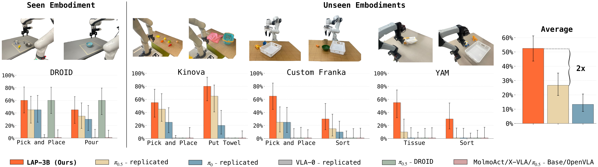
본 실험의 목적은 language-action이 VLA pre-training에 더 우수한 action representation을 제공하는지 평가하는 것이다. 특히 최신 VLA의 중대한 한계로 남아 있는 cross-embodiment generalization에 초점을 맞춘다. 구체적으로 다음 질문에 답하고자 한다.
이 질문들에 답하기 위해 LAP을 네 가지 로봇 embodiment, 열 가지 실제 환경 조작 과제, 그리고 LIBERO simulation benchmark에서 평가한다. 먼저 학습에서 본 embodiment 하나와 보지 못한 embodiment 세 가지에서 별도 적응 없이 즉시 사용할 수 있는 성능을 시험한 다음, 새로운 로봇과 과제에 대한 fine-tuning 효율을 연구한다. 이어 LAP의 language-action representation이 학습 dynamics에 미치는 영향을 조사하고, Visual–Question–Answering(VQA) dataset을 활용한 공동 학습 분석으로 마무리한다.
아래에서는 두 범주의 baseline을 평가한다. 공정한 비교를 위해 재현한 모든 baseline의 learning rate, batch size, loss weight 등을 신중히 조정했으며, 전체 세부 사항은 부록의 구현 세부 사항에 제시한다.
기존 방법이 이미 zero-shot cross-embodiment transfer를 보이는지 평가하기 위해 공개된 여러 VLA checkpoint를 평가한다.
language-action supervision의 영향을 분리하기 위해 architecture와 data mixture는 동일하고 action representation만 다른 통제 baseline을 학습한다.
모든 실험을 통틀어 실제 로봇 평가 trial을 1,300회 이상 수행한다.
네 가지 로봇 embodiment(그림 3)에서 평가한다. 이들은 pre-training mixture에 포함된 DROID setup, 그리고 이전에 본 적 없는 세 가지 embodiment인 새로운 gripper 및 wrist-mounted camera 구성을 갖춘 custom 7-DoF Franka Panda 로봇, 6-DoF YAM 로봇, 7-DoF Kinova 로봇이다.
다섯 가지 유형의 조작 과제(그림 3 위쪽 행)를 평가한다.
이 과제들은 분류 중 충돌을 피하기 위해 gripper를 회전하는 경우처럼 완전한 6-DoF 조작을 요구하며, 상호보완적인 primitive skill을 측정한다.
각 embodiment에서는 이 과제들 가운데 두 가지를 과제당 20회 trial로 평가한다. 통계적으로 유효한 유한 표본 coverage를 제공하는 방법에 따라 95% 신뢰구간과 함께 평균 성공률을 보고한다. heuristic 표준편차와 달리 이 구간은 제1종 오류(비포함) 확률을 명시적으로 통제한다. 성공 metric은 이진값이다. 전체 과제를 완료한 경우에만 해당 trial을 성공으로 표시한다. 결과는 그림 3에 요약한다.
학습 분포 내의 DROID setup에서는 거의 모든 오픈소스 VLA가 유의미한 과제 성공률을 달성하지 못한다. 유일한 예외는 DROID dataset으로 명시적으로 fine-tuning된 π₀.₅-DROID이다. 이는 현재 VLA의 중대한 한계를 보여준다. 대규모 multi-embodiment pre-training을 거쳤음에도 학습에서 본 embodiment에 효과적으로 배치하려면 대체로 embodiment별 적응이 필요하다.
재현 비교 baseline의 경우 π₀.₅-replicated와 π₀-replicated는 중간 수준이면서 서로 비슷한 성능을 달성한다. 그러나 VLA-0-replicated는 일관되게 거의 0에 가까운 action으로 붕괴한다. 이 failure mode는 사소한 예측에 대한 overfitting에서 비롯되며, 크기가 작은 action token만 예측하는 형태로 나타난다. 이 문제는 LIBERO처럼 더 작고 정제된 benchmark에서는 우려가 덜할 수 있지만, noise와 behavior diversity가 불가피한 대규모 환경에서는 치명적이다.
주목할 점은 LAP-3B가 같은 backbone architecture와 학습 데이터를 사용하면서도 과제 전반에서 π₀.₅-replicated와 π₀-replicated보다 일관되게 약 15%p 높은 성능을 보인다는 것이다. 이는 language-action representation의 우수성을 보여준다. 또한 LAP-3B는 DROID dataset 자체에서 embodiment별 fine-tuning을 전혀 수행하지 않고도 π₀.₅-DROID와 대등한 성능을 달성한다. 이는 language-action supervision이 대규모의 이질적인 로봇 데이터로부터 효과적인 학습을 가능하게 하여 강력한 학습 분포 내 성능으로 이어짐을 시사한다.
다음으로 이전에 본 적 없는 세 가지 로봇 embodiment에 대한 zero-shot transfer를 평가한다. 모든 설정에서 LAP-3B는 상당하고 일관된 우위를 보이며, 평균 성공률이 50%를 넘는다. 이는 가장 강력한 baseline 대비 약 2× 향상된 결과이다. 특히 LAP-3B는 새로운 모든 embodiment에서 일관되게 높은 성능을 달성한 유일한 모델이다.
반면 학습 분포 내에서 강력한 성능을 보였던 π₀.₅-DROID를 포함한 모든 오픈소스 VLA는 보지 못한 로봇에서 의미 있는 behavior를 생성하지 못한다. 이러한 급격한 붕괴는 기존 VLA 학습 방법이 여전히 embodiment별 제어 convention에 강하게 결부되어 있어, 시각 및 과제 semantics가 유사하게 유지되더라도 transfer를 가로막는다는 점을 시사한다.
이와 달리 LAP-3B는 embodiment 전반에서 의미론적으로 grounding된 motion과 세밀한 공간 제어를 모두 보인다. 저자들은 language-action interface가 공유되는 embodiment-agnostic abstraction을 제공하여 VLM의 일반화 가능한 visual-semantic representation을 더 잘 보존하는 동시에 새로운 로봇 kinematics에서도 정밀한 실행을 가능하게 한다고 가정한다. 이러한 분리는 LAP-3B가 일관된 과제 의도를 유지하면서 기존 VLA를 저해하는 embodiment별 overfitting을 피할 수 있게 한다.
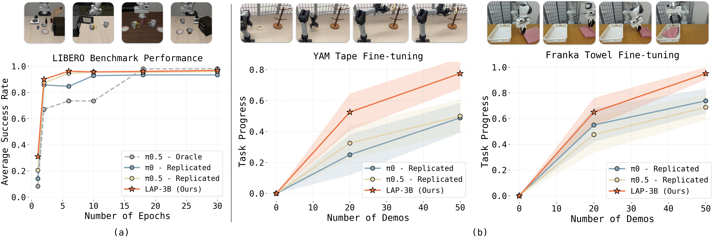
LAP-3B는 간단한 task의 새로운 embodiment에서 유의미한 zero-shot 성능을 보이지만, 현재의 training scale에서는 더 까다로운 조작 scenario에 여전히 embodiment별 적응이 필요하다. 이에 따라 LAP가 두 가지 측면에서 fine-tuning 효율을 개선하는지 조사한다. 하나는 주어진 성능 수준에 도달하는 데 더 적은 demonstration이 필요한 data 효율이고, 다른 하나는 더 적은 gradient step으로 수렴하는 compute 효율이다.
먼저 LIBERO simulation benchmark에서 LAP-3B를 fine-tuning하고, 동일한 pre-training mixture로 학습한 π0.5-replicated 및 π0-replicated baseline과 비교한다. 아울러 훨씬 더 큰 dataset으로 pre-training된 원래 π0.5 weight에서 초기화한 oracle baseline인 π0.5-Oracle도 보고한다.
그림 4(a)와 같이 LAP-3B는 모든 baseline보다 현저히 빠르게 수렴한다. 단 1 epoch의 fine-tuning만으로도 LAP-3B는 이미 성공률 78%에 도달하며, 6 epoch 이내에 거의 최대 성능인 96.8%를 달성한다. 이는 replicated baseline 두 가지와 oracle model 모두에 비해 update 횟수가 현저히 적다. π0.5-Oracle은 장시간 학습한 뒤 최종적으로 약간 더 높은 점근 성능에 도달하지만, LAP-3B는 compute 효율에서 뚜렷한 우위를 보인다. 이러한 결과는 language-action pre-training이 새로운 embodiment에 빠르게 적응하는, transfer 가능성이 더 높은 initialization을 제공함을 보여준다. LAP-3B와 baseline method의 LIBERO benchmark 결과는 부록의 추가 결과 절에 요약한다.
다음으로 까다로운 실제 로봇 task 두 가지에서 fine-tuning한다(그림 4의 상단 행 오른쪽).
결과는 그림 4에 제시한다. 각 data point마다 20회 trial을 수행하여 task progress metric을 평가한다. 자세한 내용은 부록의 평가 세부 사항을 참조한다.
두 task 모두에서 LAP-3B는 훨씬 적은 demonstration만으로도 높은 성능을 달성한다. YAM에서 LAP-3B는 단 20개의 demonstration을 사용하여 약 50%의 task progress에 도달한다. 이는 baseline보다 demonstration이 대략 2.5× 적다. Franka에서 LAP-3B는 모든 data regime에 걸쳐 π0.5-replicated와 π0-replicated를 일관되게 능가한다. 이러한 결과를 종합하면 language-action pre-training은 적응성이 더 높은 VLA를 만들어내며, 새로운 embodiment와 task로 transfer할 때 sample 효율과 fine-tuning 속도를 모두 개선한다.
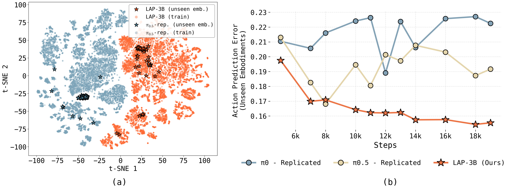
그림 5(a)에서는 robot embodiment 전반의 내부 control representation을 포착하는 action token의 평균 prelogit을 embedding하여 학습된 embodiment feature를 t-SNE로 시각화한다. LAP-3B는 unseen embodiment와 training data 사이에서 현저히 개선된 정렬을 보인다. 즉, unseen embodiment의 feature가 별도의 cluster를 형성하는 대신 training embodiment의 feature와 밀접하게 중첩된다. 이 representation space에서 training embodiment와 unseen embodiment 사이의 중첩이 더 강하다는 것은 모델이 transfer 가능성이 더 높고 embodiment에 구애받지 않는 representation을 학습했음을 뜻하며, language-action pre-training이 강력한 zero-shot embodiment transfer를 가능하게 하는 이유를 설명하는 데 도움이 된다.
다음으로 앞 절에서 설명한 unseen robot embodiment의 held-out dataset에서 action prediction error를 측정하여 pre-training 중 학습된 representation의 품질을 평가한다. Prediction error는 predicted action과 ground-truth action 사이의 ℓ2 distance로 측정한다.
그림 5(b)와 같이 LAP-3B는 대안적 action representation으로 학습한 baseline보다 unseen embodiment에서 일관되게 낮은 action prediction error를 달성한다. 이는 language-action supervision이 embodiment shift 전반에서 generalization이 더 우수한 control representation으로 이어짐을 보여준다. 또한 학습이 진행되는 동안 prediction error가 매끄럽고 단조롭게 감소하므로, LAP가 더 안정적인 training dynamics를 가능하게 함을 시사한다.
| Metric | LAP-3B | π0.5-replicated | π0-replicated |
|---|---|---|---|
| Prediction Error (Unseen) | 0.151 | 0.168 | 0.189 |
| Validation Loss (Unseen) | 0.049 | 0.051 | 0.052 |
표 2에는 (flow-matching) action expert의 최저 validation loss도 함께 보고한다. 이러한 결과를 종합하면 language-action pre-training은 단지 optimization을 안정화하는 데 그치지 않고 control representation이 embodiment 전반으로 transfer되는 방식을 근본적으로 개선한다. 이에 따라 LAP-3B는 unseen robot에서 더 정확한 action을 예측할 수 있으며, 이는 강력한 zero-shot 성능과 우수한 fine-tuning 효율을 모두 설명한다.
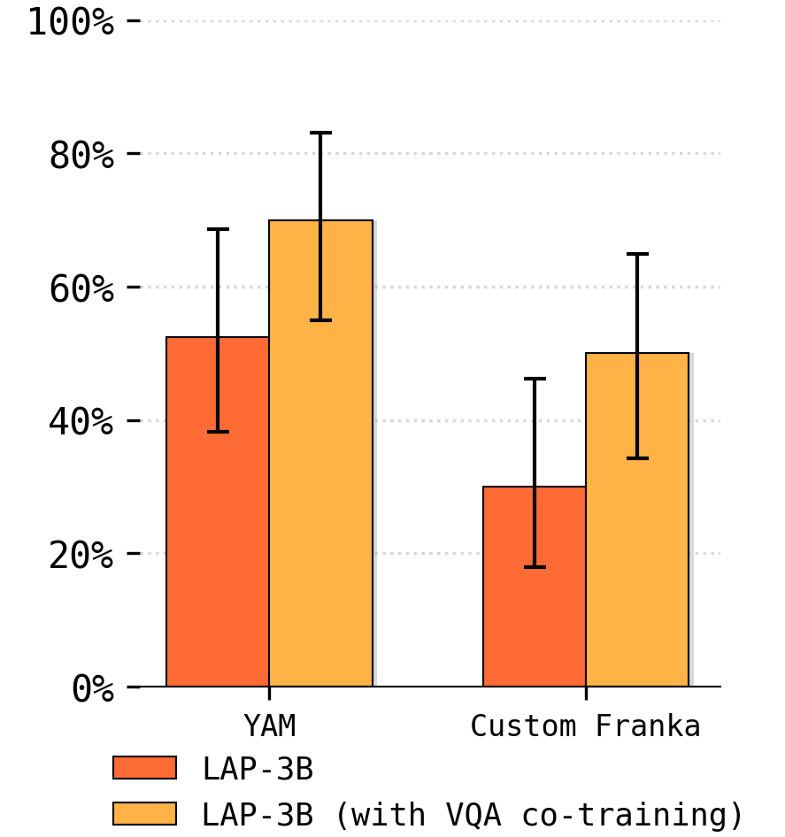
추가적인 Visual-Question-Answering(VQA) task와의 co-training이 LAP-3B에 이점을 제공하는지 추가로 조사한다. 모델에 연속된 두 이미지를 prompt로 제시하고 frame 사이의 변화를 설명하는 해당 language-action을 예측하도록 요구하는 motion-prediction task를 고려하며, 이는 “inverse dynamics” prediction과 유사하다(그림 1 왼쪽 아래). 이 co-training objective는 통합된 언어 기반 출력 형식을 공유함으로써 표준 VQA 형식의 supervision과 본 연구의 language-action prediction을 자연스럽게 연결한다.
그림 6에 제시한 결과와 같이, Custom Franka와 YAM이라는 두 embodiment에서 결과 모델을 평가한다. 이 motion-prediction VQA task를 통합하면 더 정밀한 action generation과 향상된 spatial generalization으로 이어져 embodiment 전반에서 더 높은 성공률을 달성한다. 또한 co-training은 새로운 task에 더 쉽게 적응할 수 있는 checkpoint를 생성하여, 더 적은 gradient step으로 더 빠르게 fine-tuning할 수 있게 하고 최종 수렴 성능도 더 높인다(부록의 ‘추가 결과’ 참조).
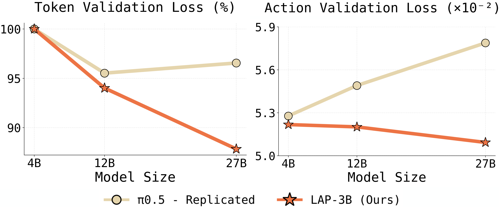
다음으로 LAP이 증가한 model capacity의 이점을 얻는지, 그리고 그 이점이 large-model regime에서도 유지되는지 조사한다.
Gemma3를 VLM backbone으로 사용하여 4B, 12B, 27B parameter 규모의 LAP 모델을 학습하고, 현재 VLA 분야의 state of the art를 나타내는 해당 규모의 π0.5-replicated 변형과 비교한다.
전체 data mixture의 2.5%로 구성된 held-out split에서 두 가지 metric을 평가한다. (i) VLM backbone의 token validation loss와 (ii) flow-matching 기반 action expert의 validation loss이다. 서로 다른 action representation 사이에서는 절대 loss 값을 직접 비교할 수 없으므로, token validation loss는 4B 모델 대비 감소율(%)로 보고한다.
그림 7에서 보듯이 LAP은 모든 model size에서 일관되게 더 낮은 validation loss를 달성하고 유리한 scaling 거동을 보이며, model capacity가 증가함에 따라 성능이 단조롭게 향상된다. 반면 π0.5-replicated baseline은 조기에 포화되고 더 큰 scale에서는 오히려 성능이 저하된다. 이러한 결과는 language-action supervision이 large-model regime에서도 여전히 효과적이며, 추가적인 representational capacity로부터 갈수록 더 큰 이점을 얻는다는 것을 보여준다.
본 연구에서는 자연어로 action을 예측하여 로봇 embodiment 전반에 효과적으로 transfer되는 representation을 생성하는 확장 가능한 VLA pre-training 방식인 Language-Action Pre-training(LAP)을 소개한다. 또한 실제 로봇에서 상당한 zero-shot generalization을 달성하는 LAP-3B를 제시한다. 이 모델은 기존 action representation보다 절대값 기준 약 30%p 향상된 성능을 제공하며, 저자들이 아는 한 fine-tuning 없이 새로운 embodiment에서 유의미한 zero-shot 성공률을 최초로 달성한다. LAP-3B는 안정적인 학습, 유리한 scaling, 높은 fine-tuning 효율도 보인다.
LAP은 로보틱스를 위해 VLM을 명시적으로 학습할 가능성을 열어 준다. 이에 따라 로봇의 interaction data와 잠재적으로 비로봇 interaction data를 표준 VLM corpus와 자연스럽게 혼합하여, 통합된 representation space 안에서 추론하고 소통하며 행동하는 모델을 학습할 수 있다.
이러한 고무적인 결과에도 몇 가지 한계가 남아 있다. LAP은 훨씬 더 이질적인 로봇 system과 data source에 적용할 수 있지만, 본 논문은 single-arm manipulator 사이의 zero-shot transfer에만 초점을 맞춘다. 예를 들어 LAP은 bimanual robot에도 쉽게 적용할 수 있으며, 이때 action은 두 팔을 조율한 설명으로 표현할 수 있다(예: 왼팔: 앞으로 5 cm 이동; 오른팔: 시계 방향으로 20도 회전). language-action의 또 다른 핵심 이점은 정밀도 수준이 달라도 자연스럽게 작동하고 정확도가 낮은 action label에도 더 관대하다는 점이다. 따라서 정밀한 low-level control signal을 얻기 어려운 human pose tracking, UMI 또는 internet video와 같은 데이터를 활용할 수 있다. 이러한 방향을 대규모로 체계적으로 조사하는 일은 향후 연구의 중요한 과제로 남아 있다.
둘째, LAP-3B는 수건을 접어 바구니에 넣기(Fold Towel and Put in Basket)와 랙에 테이프 걸기(Hang Tape on Rack)처럼 중간 수준의 dexterity가 필요한 과제에 효율적으로 적응하지만, 훨씬 더 높은 control frequency나 극도의 정밀도를 요구하는 regime(예: 빠른 reactive control 또는 세밀한 deformable object manipulation)에서는 아직 평가하지 않았다. language-action supervision을 이러한 환경으로 확장하는 일은, 잠재적으로 hierarchical 또는 multi-scale action representation을 통해 이루어질 수 있으며, 여전히 해결되지 않은 과제이다.
Cloud TPU에 접근할 수 있도록 지원한 Google의 TPU Research Cloud(TRC)에 감사한다. 또한 본 프로젝트에 귀중한 의견을 제공한 Maria Attarian, Samuel Bateman, Julian Mendes에게 감사한다.
저자들은 NSF CAREER Awards #2044149 및 #2107048, Grant N00014-23-1-2148에 따른 Office of Naval Research, DCIST CRA W911NF-17-2-0181에 따른 Army Research Laboratory, Sloan Fellowship, Gemini Academic Program의 부분 지원을 받았다. Asher J. Hancock은 NSF Graduate Research Fellowship(DGE-2146755)의 지원을 받았다.
Zero-shot embodiment transfer에서 모든 baseline policy를 추가로 정성 비교하여 본문의 Zero-Shot Cross-Embodiment Generalization 절에 제시한 결과를 보완한다.
OpenVLA, MolmoAct, π0.5-Base는 모든 로봇 platform에서 일관되게 의미 있는 motion을 생성하지 못한다. X-VLA는 부드러운 trajectory를 생성하며 DROID와 Custom Franka setup에서 때때로 target object에 접근하지만, 성공적인 manipulation에 필요한 정확한 gripper–object alignment는 한 번도 달성하지 못한다.
π0-replicated baseline은 매우 부정확한 end-effector control을 보인다. 예를 들어 YAM robot의 Tissue 과제에서는 target을 자주 지나쳐 tissue 자체가 아니라 tissue box를 grasp한다. 반면 π0.5-replicated는 대체로 더 부드럽고 방향 측면에서 더 합리적인 motion을 생성하지만, 신뢰할 수 있는 grasp와 성공적인 과제 완료에 필요한 공간 정밀도는 여전히 부족하다. Custom Franka와 Kinova robot에서도 두 baseline은 마찬가지로 부정확한 motion을 보여, embodiment shift 상황에서 정확한 control action을 추론하는 능력이 제한적임을 시사한다. 이러한 failure mode는 평가한 모든 embodiment에서 일관되게 나타난다. rollout 예시는 그림 8에 제시한다.
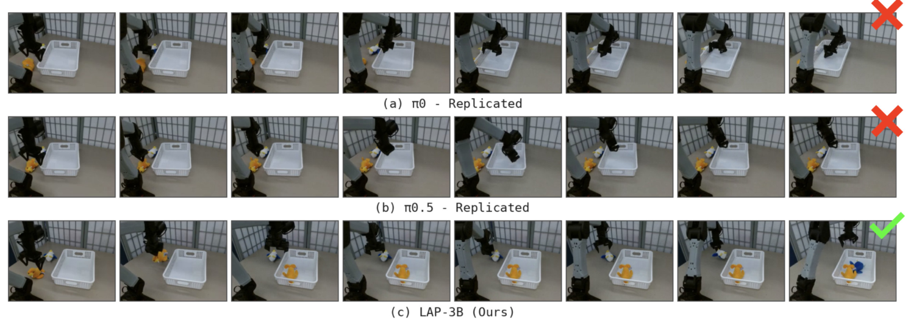
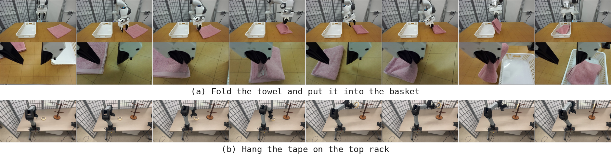
| 방법 | Spatial | Object | Goal | LIBERO-10 | 평균 | 순위 |
|---|---|---|---|---|---|---|
| TraceVLA | 84.6 | 85.2 | 75.1 | 54.1 | 74.8 | 13 |
| X-VLA | 98.2 | 98.6 | 97.8 | 97.6 | 98.1 | 1 |
| Octo | 78.9 | 85.7 | 84.6 | 51.1 | 75.1 | 12 |
| UniAct | 77.0 | 87.0 | 77.0 | 70.0 | 77.8 | 11 |
| GR00T-N1 | 94.4 | 97.6 | 93.0 | 90.6 | 93.9 | 8 |
| OpenVLA | 84.7 | 88.4 | 79.2 | 53.7 | 76.5 | 10 |
| OpenVLA-OFT | 97.6 | 98.4 | 97.9 | 94.5 | 97.1 | 3 |
| UniVLA | 95.4 | 98.8 | 93.6 | 94.0 | 95.4 | 6 |
| π0 | 96.8 | 98.8 | 95.8 | 85.2 | 94.2 | 7 |
| π0.5 | 98.8 | 98.2 | 98.0 | 92.4 | 96.9 | 4 |
| VLA-0 | 97.0 | 97.8 | 96.2 | 87.6 | 94.7 | 9 |
| LAP-3B | 98.2 | 99.0 | 98.8 | 91.2 | 96.8 | 5 |
| LAP-3B + VQA Co. | 99.0 | 99.0 | 97.2 | 93.4 | 97.2 | 2 |
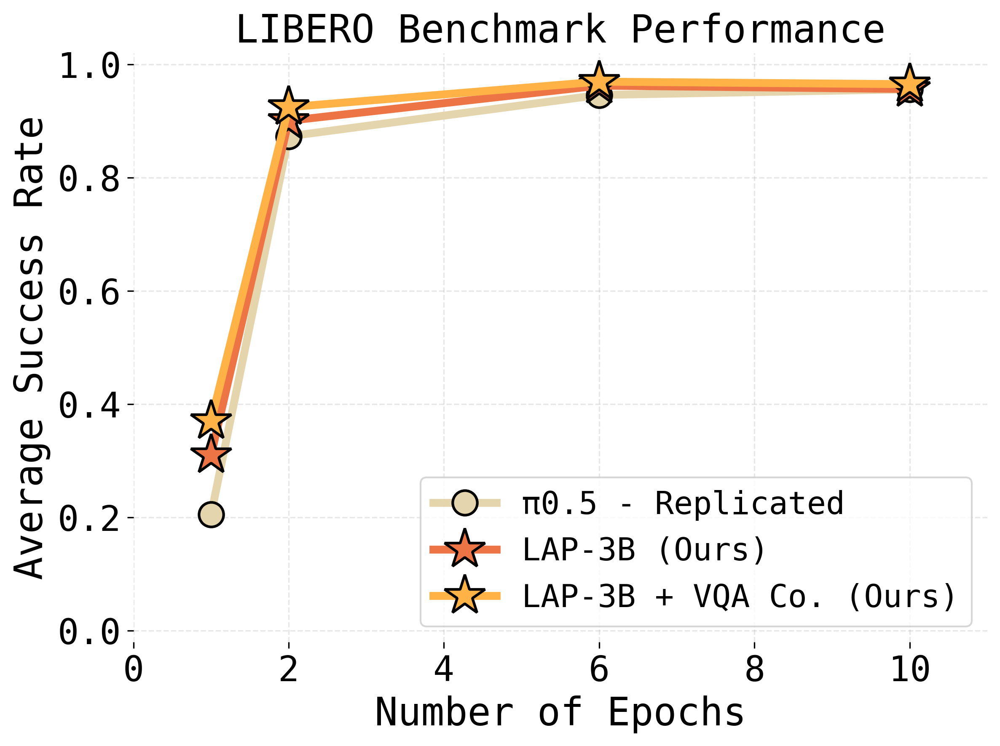
표 3은 본문에 제시하지 않은 추가 오픈소스 VLA baseline을 포함한 전체 LIBERO benchmark 결과를 보고하며, task family와 세 가지 task suite 전체에서 LAP-3B가 일관된 성능 향상을 보인다는 점을 추가로 확인한다. LAP-3B + VQA Co.는 실험 절에서 설명한 대로 VQA data와 함께 co-training한 policy를 뜻한다. LAP-3B 단독 모델보다 향상된 성능은 VQA co-training의 효과를 더욱 분명히 보여준다. 또한 그림 10에서 보듯이 co-trained checkpoint는 LIBERO에서 fine-tuning 효율을 크게 높여, 동일한 gradient step으로 더 우수한 성능을 달성한다.
모든 embodiment와 과제에 걸친 확장된 정성적 rollout 시각화도 추가로 제공한다. Fine-tuning 평가는 그림 9에, zero-shot 평가는 해당 zero-shot rollout 시각화 그림에 제시한다.
각 panel은 policy 실행 중 사용한 camera view에 해당한다.
kinematics, sensing 구성, control interface가 서로 다른 네 가지 로봇 embodiment에서 LAP-3B를 평가한다.
fine-tuning에서는 더 정밀한 low-level control이 가능하도록 YAM에 joint-space action을 사용하며, 그 외 모든 로봇은 end-effector pose action으로 제어한다.
| Hyperparameter | 값 |
|---|---|
| Batch size | 2048 |
| Learning rate | 1 × 10−4 |
| Warmup steps | 5000 |
| EMA start step | 5000 |
| EMA decay | 0.999 |
| Action horizon | 16 |
| Adam (β1, β2) | (0.9, 0.95) |
| Gradient clipping norm | 1.0 |
| Weight decay | 1 × 10−4 |
전체 학습 objective는 다음과 같다.
L = L_flow + λ L_CE
pre-training 중에는 λ=0.8을 사용하고 fine-tuning 중에는 λ=0.4를 사용한다. 그 밖의 hyperparameter는 표 4에 제시한다. language-action loss가 diffusion 기반 action expert보다 훨씬 빠르게 수렴하므로, pre-training 중에는 λ<1로 설정하여 language-action loss의 가중치를 약간 낮춘다. 이러한 균형 조정은 더 빠른 language-action objective가 optimization을 지배하지 못하게 하고, 두 component가 비슷한 속도로 학습되도록 유도한다.
재현한 모든 baseline(π0.5-replicated, π0-replicated, VLA-0-replicated)에 대해 hyperparameter를 신중하게 조정하고, 실제 로봇을 사용한 예비 validation run을 바탕으로 가장 좋은 성능의 checkpoint를 선택한다.
모든 baseline에서 learning rate는 {1×10−4, 5×10−5} 범위로, batch size는 {1024, 2048} 범위로 sweep한다.
π0.5-replicated에 대해서는 FAST token의 cross entropy loss weight를 {0.1, 0.4, 0.6, 0.8} 범위로, action horizon을 {16, 32} 범위로 추가 sweep한다.
별도로 명시하지 않는 한, 재현한 모든 baseline에 최종적으로 사용하는 hyperparameter는 batch size 2048, learning rate 1×10−4, action horizon 16, loss weight λ=0.6이다.
명시적으로 조정한 이 parameter 외에는 재현한 모든 baseline이 동일한 network architecture, data mixture, sampling strategy, optimization 설정을 비롯하여 본 방법과 동일한 design choice를 공유한다.
나머지 모든 hyperparameter는 표 4에 나열된 설정을 따른다.
π0-replicated에는 원래 OpenPI codebase의 구현을 그대로 따른다.
π0.5-replicated에는 공개된 code에서 제공하지 않는 FAST action token과 Knowledge Insulation(action expert에서 backbone으로 향하는 gradient를 차단함)을 사용한 VLM backbone supervision을 포함하도록 원래 구현을 확장한다.
VLA-0-replicated에는 masked action augmentation, 권장 action resolution, prompt format을 포함하여 원 논문의 specification을 엄격히 따라 방법을 재구현한다. 또한 논문에서 보고한 범위를 넘어, 특히 learning rate와 batch size를 신중하게 조정한다. 이러한 조정을 통해 재현한 모델은 LIBERO benchmark에서 대등한 성능을 달성한다. 그러나 zero-shot 절에서 논의했듯이 대규모 dataset으로는 scale되지 않는다.
본 모델과 모든 baseline에서는 다음의 구조화된 template을 prompt로 사용한다.
Task: <instruction>, predict the robot's action in the <base frame> or <end-effector frame>; State: s₁ s₂ … s_D; Answer:예시는 다음과 같다.
Task: Put the marker into the cup, predict the robot's action in the base frame; State: 20 121 34 144 112 45 235 44 21 255; Answer:Language-action은 고정된 순서의 구조화된 clause로 생성한다.
move <direction> <k> cm; tilt <direction> <k> degrees; rotate <cw/ccw> <k> degrees; open/close grippertranslation magnitude는 정수 centimeter 단위로, rotation magnitude는 정수 degree 단위로 discretize하며, 0에 가까운 control noise를 억제하기 위해 값이 0인 movement는 생략한다.
language–action data curation과 마찬가지로 motion prediction VQA pair는 manual annotation 없이 자동으로 생성한다. 각 training instance는 다음 prompt template을 사용하여 구성한다.
Task: question; State: s₁ s₂ … s_D; Answer:여기서 question은 두 observation 사이의 temporal relationship을 설명하도록 모델에 요구한다(예: “What movement did the robot make from the first image to the second in the robot base frame?”). prompt의 diversity와 robustness를 높이기 위해 의미상 동등한 question 표현을 무작위로 sampling한다. 이에 대응하는 answer로는 두 frame 사이의 robot motion을 설명하는 ground-truth language–action을 사용한다.
모든 input image는 추가 processing에 앞서 먼저 고정 resolution으로 resize한다(padding 포함). 학습 중에는 모든 camera view의 image에 augmentation을 적용한다. image를 [0,1]로 normalize한 뒤, target resolution의 95% 크기로 random crop하고 원래 크기로 다시 resize하는 단계, [−5°, 5°]에서 균일하게 sampling한 random in-plane rotation, 그리고 brightness, contrast, saturation parameter를 각각 0.2로 설정한 color jitter로 구성된 pipeline을 적용한다. 이는 [0.8, 1.2]에서 균일하게 sampling한 multiplicative factor에 해당한다. 그런 다음 augmentation된 image를 model input에 맞게 [−1,1]로 다시 rescale한다. batch의 각 image에는 독립적인 random seed를 사용하여 augmentation을 적용한다. VQA sample에는 원래 visual input을 보존하기 위해 augmentation을 전혀 적용하지 않는다.
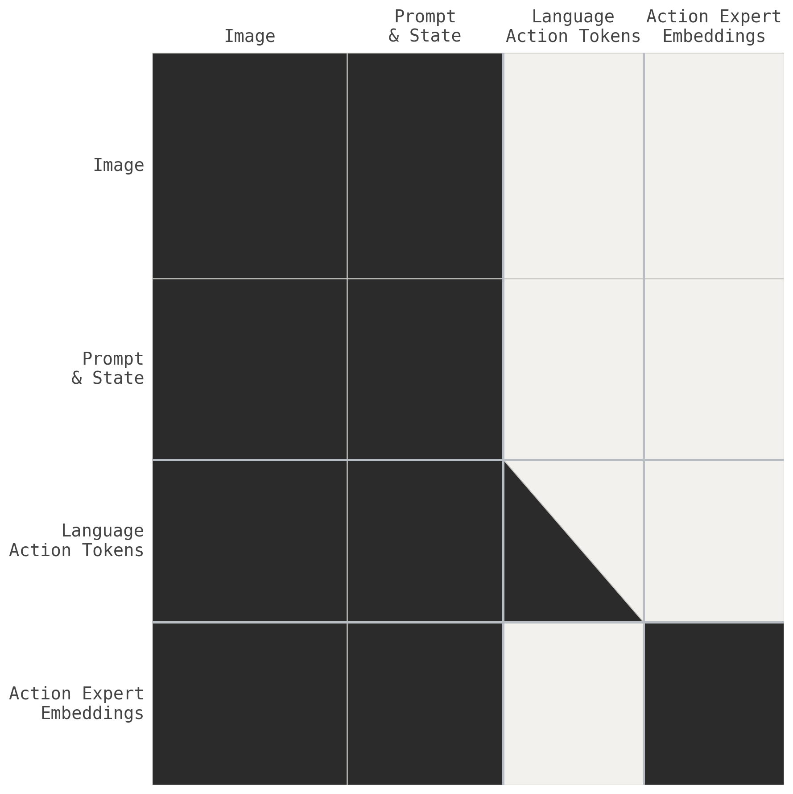
그림 11에 LAP-3B의 attention mask를 시각화한다. image, prompt, state를 포함하는 prefix token은 bidirectional attention을 사용한다. Language-action token은 모든 prefix token에 대해 full attention을 갖는 동시에 서로에 대해서는 causal attention을 적용한다. action expert는 full self-attention을 사용하고 prefix token 전체에 full attention을 적용하지만, language-action token에는 attention을 적용하지 않는다.
ground-truth action chunk a와 base noise z ∼ 𝒩(0, I)가 주어지면, 다음과 같은 interpolated state를 구성한다.
x_τ = (1 − τ)z + τa, τ ∼ U(0, 1)
이에 대응하는 target velocity는 다음과 같다.
u = a − z
action expert vφ는 다음 flow-matching objective를 통해 학습된다.
L_flow = 𝔼[‖v_φ(x_τ, τ; o, l) − (a − z)‖₂²]
이 objective는 observation과 task를 조건으로 noise를 유효한 action으로 운반하는 continuous vector field를 모델이 학습하도록 유도한다.
inference 시에는 학습된 dynamics를 다음과 같이 적분하여 action을 생성한다.
dx_τ / dτ = v_φ(x_τ, τ; o, l)
τ = 0에서 τ = 1까지 fixed-step explicit ODE solver를 사용하여 적분한다.
학습에 사용한 전체 dataset mixture는 표 5에 요약한다. 보고된 weight는 각 dataset의 상대적 크기를 반영하므로, training batch 내에서 각 source로부터 추출되는 sample의 실제 비율을 나타낸다. DROID dataset은 task coverage가 광범위하고 environmental diversity가 풍부하므로 더 높은 비율을 할당한다.
| Training Dataset Mixture | |
|---|---|
| Dataset | 비율 |
| DROID | 85.26% |
| Fractal | 5.86% |
| Bridge | 3.39% |
| BC-Z | 0.47% |
| Taco Play | 0.73% |
| Jaco Play | 0.12% |
| Furniture Bench Dataset | 0.31% |
| UTAustin Mutex | 0.56% |
| Berkeley Fanuc Manipulation | 0.19% |
| FMB Dataset | 0.09% |
| Berkeley Autolab UR5 | 0.15% |
| Austin Buds Dataset | 0.05% |
| Austin Sailor Dataset | 0.53% |
| Austin Sirius Dataset | 0.44% |
| Viola | 0.12% |
| MolmoAct | 1.73% |
학습 중에는 연속된 step에서 action sequence가 작은 motion threshold보다 낮은 경우 해당 idle segment를 제거하고, task instruction이 없는 trajectory는 폐기한다.
Hero-run compute. VQA co-training을 적용한 LAP-3B와 적용하지 않은 LAP-3B, 그리고 복제한 모든 baseline을 포함하여 최종 보고된 모든 model checkpoint는 동일한 large-scale pre-training setup으로 학습했다. 각 hero run은 TPU v6e-64 slice에서 약 50시간 동안 학습했으며, 이렇게 얻은 checkpoint를 모든 main experiment에 사용했다. 보고된 각 모델의 총 hero-run compute는 약 모델당 50 TPU v6e-64시간이다.
총 pre-training compute. 초기 prototyping, debugging run, downstream fine-tuning experiment를 제외하고, LAP-3B와 복제한 모든 baseline을 포함한 전체 pre-training experiment에서 약 200회의 large-scale training run을 수행했다. 이 experiment들은 총 4,000 TPU v6e-64시간 이상을 사용했다.
Inference compute. 모든 real-robot evaluation은 추가적인 model parallelism, specialized hardware 또는 acceleration technique 없이 단일 범용 GPU인 NVIDIA RTX 4090을 사용하여 real time으로 실행한다. 보고된 experiment의 end-to-end real-robot evaluation에는 총 약 24시간의 사람이 감독한 runtime이 필요했다.
각 task는 workspace boundary 안에서 object placement를 무작위화하여 20회의 독립 trial로 평가한다. task가 성공하거나 time-out이 발생하거나 safety-triggered abort가 일어나면 trial을 종료한다. safety-triggered abort의 예로는 robot이 table과 충돌하거나 joint limit에 도달하거나 과도하게 빠르거나 불안정한 motion과 같은 unsafe behavior를 보이는 경우가 있다.
zero-shot experiment에서는 binary task success와 함께 binomial success rate에 대한 95% finite-sample valid confidence interval을 보고한다. 이 interval은 Type-I error, 즉 miscoverage probability를 제어한다.
fine-tuning experiment에서는 부분적인 task completion을 포착하기 위해 단계별 success score를 사용한다.
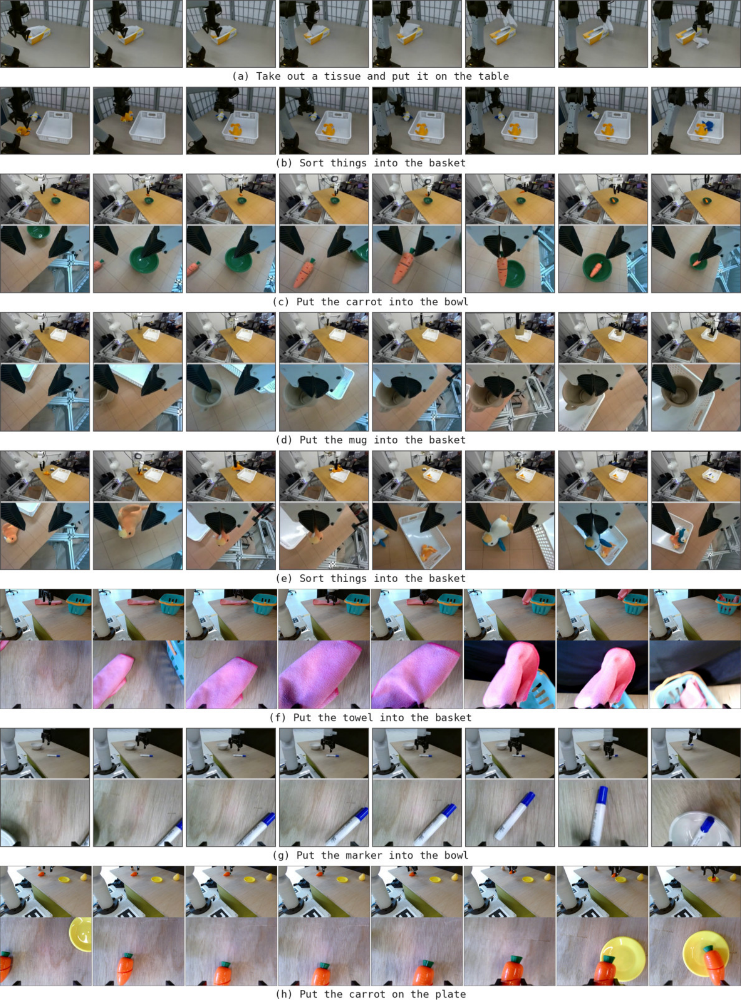
원문 참고문헌을 원문 제목 중심으로 정리한다.
공식 프로젝트 페이지에서 수집한 영상 32개다. PDF에서는 썸네일을 클릭하면 GCS 보관본을 열 수 있으며, 각 항목에 공식 원본 링크도 함께 제공한다.

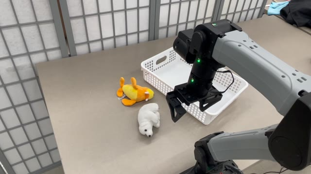
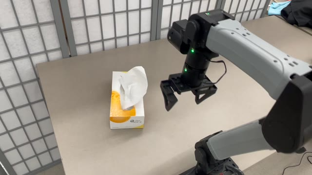
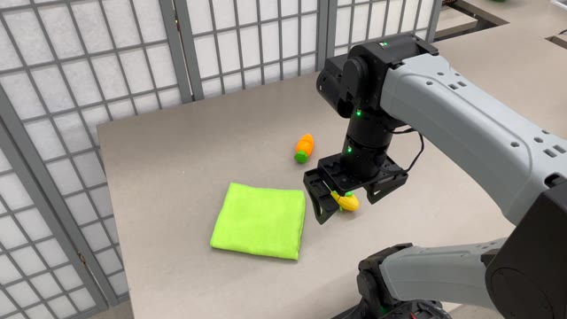
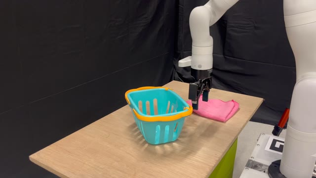

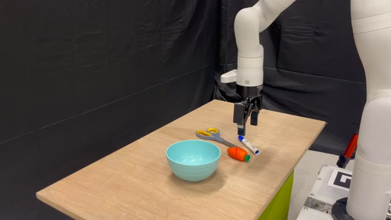
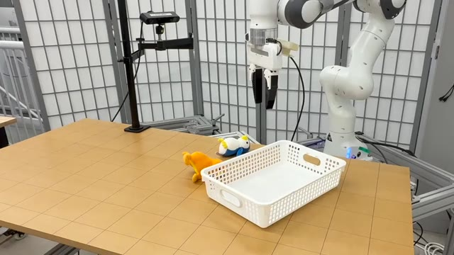
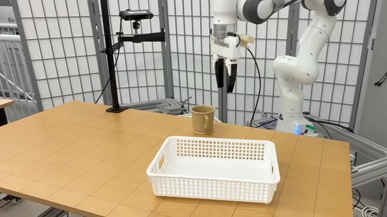
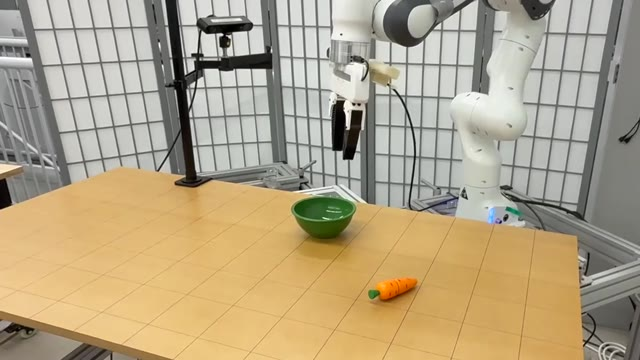
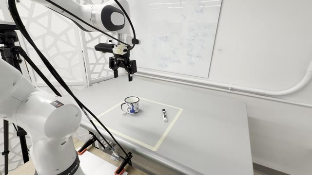
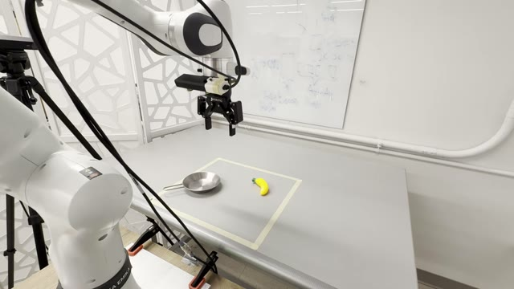
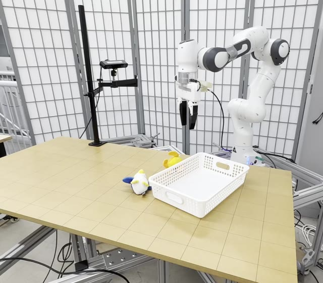
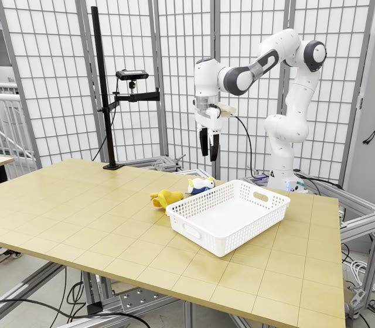
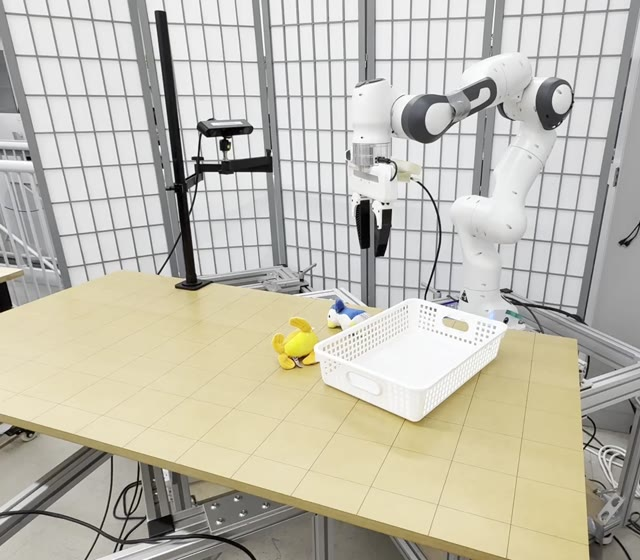
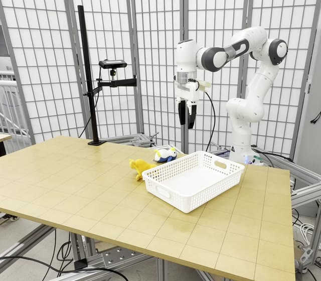
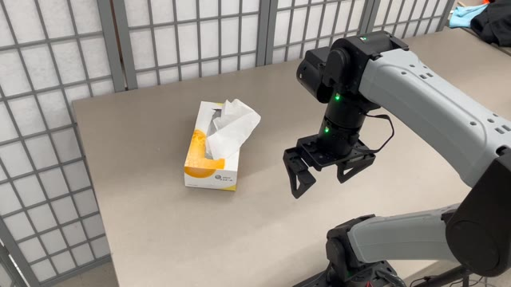
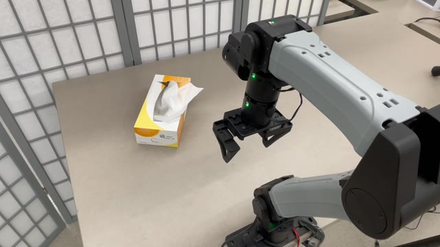
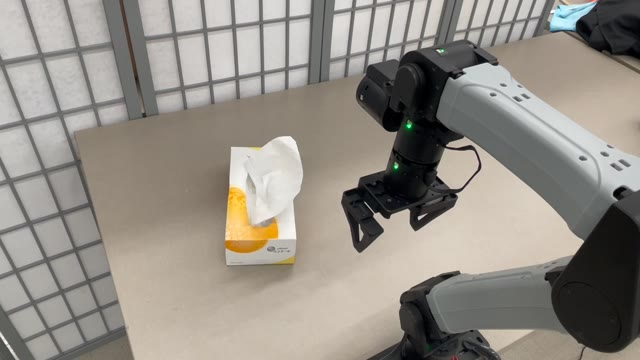
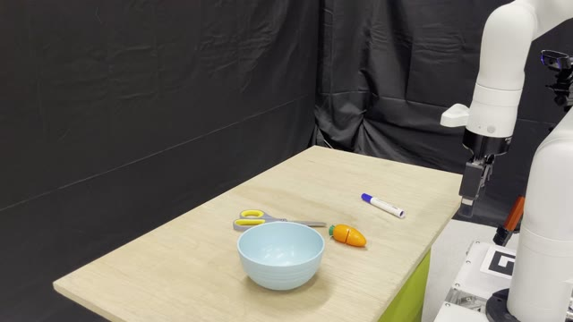
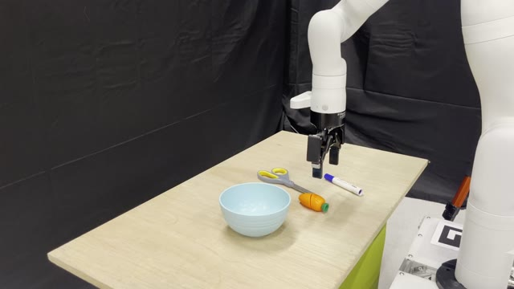
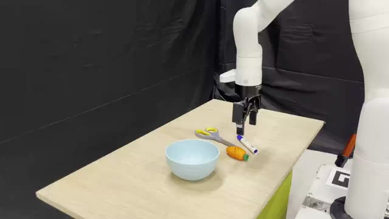
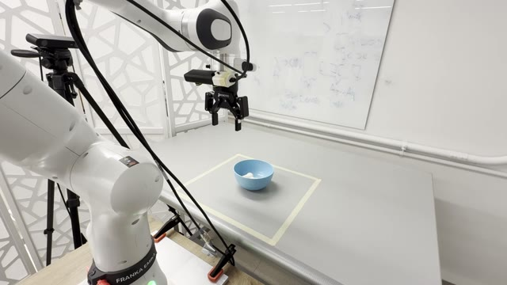
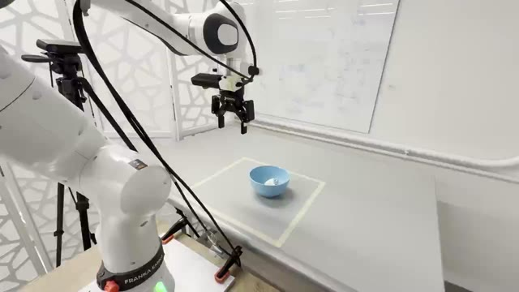
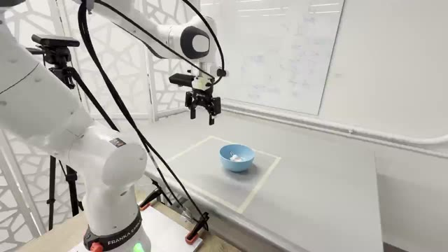
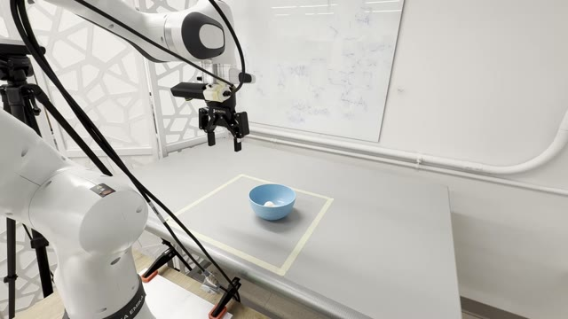
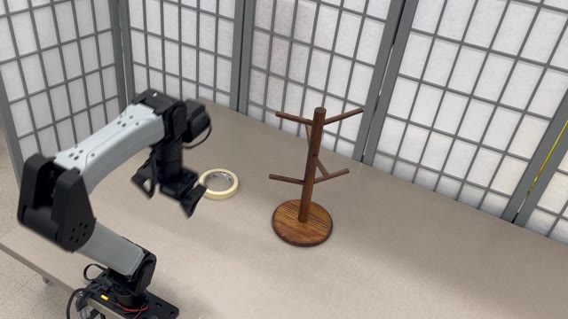
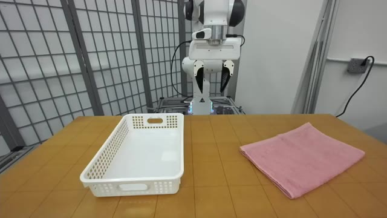
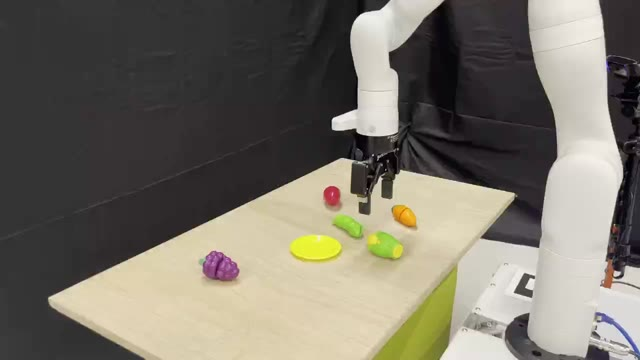
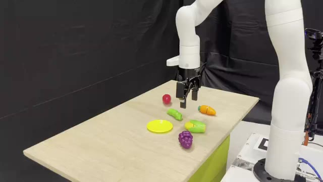
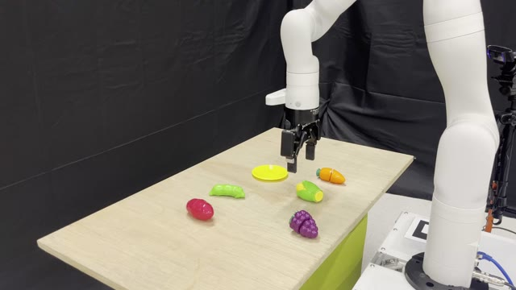